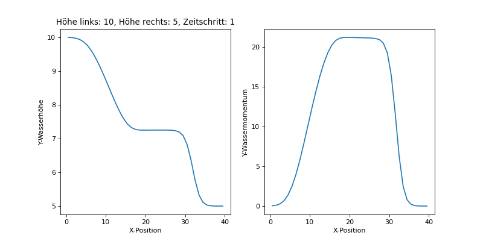
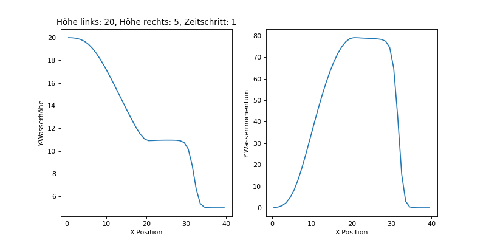
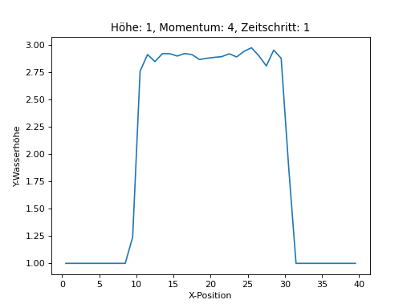
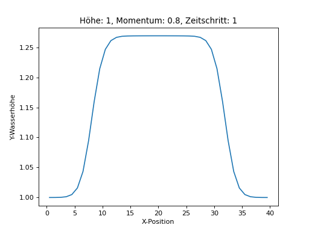
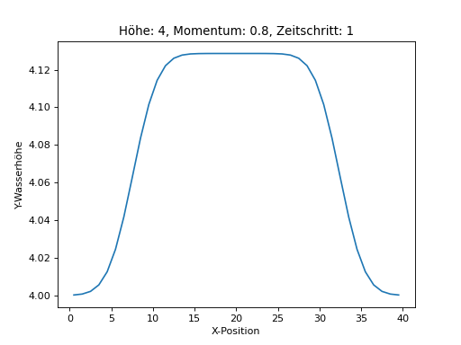
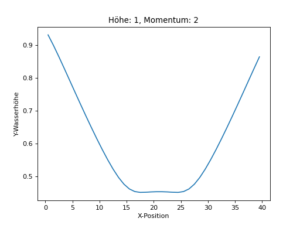
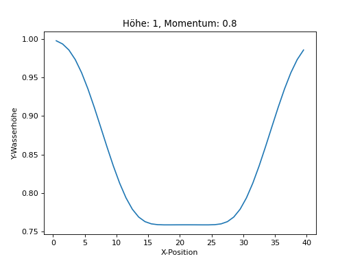
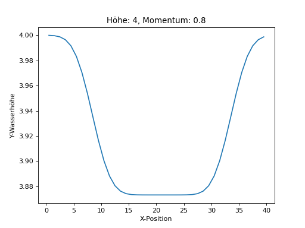

Woche 2
In der zweiten Woche des Tsunami Labs soll der F-Wave-Solver integriert werden. Dabei muss die Korrektheit überprüft werden und neben dem Dammbruch Setup sollen noch die Rare-Rare und Shock-Shock Setups implementiert werden.
Beiträge der Gruppenmitglieder
Gemeinsam
Das Integrieren des F-Wave-Solvers in die WavePropagation1d Klasse haben wir mit einem
zusätzlichen Parameter umgesetzt. Die Option solverId wird dem Konstruktor übergeben.
Der Wert 0 entspricht dabei dem Roe-Solver und 1 dem F-Wave-Solver.
Marvin Döring
Sanity Check
Zu den Tests des F-Wave-Solvers wurde ein weiterer Fall hinzugefügt, welcher die ersten zehn Werte aus der middle_states.csv überprüft.
Runtime Parsing
Um das wechseln zwischen verschiedenen Einstellungen wie zum Beispiel die Anzahl der Zellen,
die Art des Solvers oder das Setup zu wählen wurde die Klasse Parser eingeführt. Runtime
Argumente können somit in der Form arg_name=arg_value dem Programm übergeben werden.
Rare-Rare Setup
Die Klasse RareRare1d dient als Setup für den Rare-Rare Fall. Dabei werden die Wasserhöhe,
das Wassermomentum und die Position der Diskontinuität übergeben. Die initialen Werte der Wassersäulen
werden dann nach der Formel berechnet:
Dammbruch Experimente
Für das Dammbruch Setup haben wir folgende Tests durchgeführt:
(Source code, png, hires.png, pdf)
{kind=link}
{kind=link}

(Source code, png, hires.png, pdf)
{kind=link}
{kind=link}

Man erkennt im Plot zum Wassermomentum, dass das Momentum deutlich stärker ist, wenn die initiale linke Wasserhöhe steigt.
Github Actions
Wir nutzen Github Actions um beim Pushen automatisch die Unit-Tests auszuführen.
Philipp Prell
Shock-Shock Setup
Für die Klasse ShockShock1d wurde die Formel:
verwendet. Sie ist der RareRare1d Klasse in der Funktionsweise sehr ähnlich.
Zusammenhang zwischen Wasserhöhe und Wassermomentum auf die Wellengeschwindigkeiten
Für das Shock-Shock Setup haben wir folgende Tests durchgeführt:
(Source code, png, hires.png, pdf)
{kind=link}
{kind=link}

(Source code, png, hires.png, pdf)
{kind=link}
{kind=link}

(Source code, png, hires.png, pdf)
{kind=link}
{kind=link}

Man kann also beobachten, dass eine Erhöhung des Momentums dazu führt, dass die Wasserhöhe deutlich mehr ansteigt.
Für das Rare-Rare Setup haben wir folgende Tests durchgeführt:
(Source code, png, hires.png, pdf)
{kind=link}
{kind=link}

(Source code, png, hires.png, pdf)
{kind=link}
{kind=link}

(Source code, png, hires.png, pdf)
{kind=link}
{kind=link}

Die Rarefaction-Welle scheint linear zu sein, wenn das Momentum hoch ist. Im Gegensatz wirk sie bei niedrigerem Mometum eher abgerundet.
Mathematische Beobachtung der Wellengeschwindigkeiten an der Diskontinuität
An der Diskontinuität scheint das Momentum mathematisch keinen Einfluss auf die Wellengeschwindigkeiten zu haben.
Dorf Evakuierung
Eine Flutwelle aus einem großen Reservoir bewegt sich 25 km stromabwärts auf ein Dorf zu. Gesucht ist die Zeit bis zum Eintreffen der Welle im Dorf.
Gegeben:
Lösung:
Die Dorfbewohner haben etwa 41 Minuten Zeit, um das Gebiet zu verlassen.